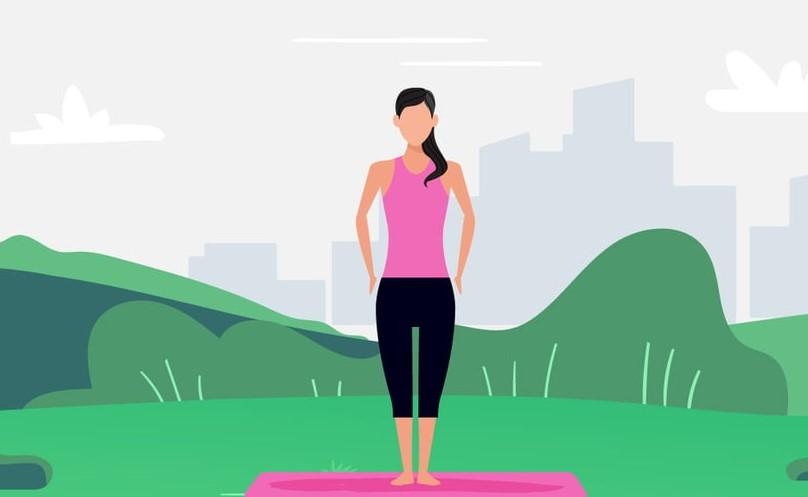
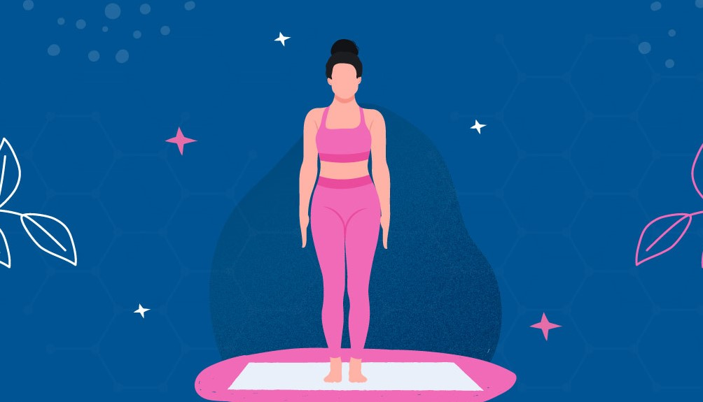

Tadasana, or mountain pose, is a standing yoga pose. It is the first position used in surya namaskar or sun salutations. It is also a starting position for your yoga practice.
WHEN TO PERFORM TADASANA

While Tadasana is part of general yoga practice, it is noteworthy as the starting pose and final pose in most, if not all, Surya Namaskar sequences. As well as being used to start and finish sun salutations, Tadasana is one of the foundational Ashtanga yoga poses suitable for working on basic body awareness and control for other standing poses. Together with control and body awareness, it improves overall posture.
BENEFITS OF TADASANA MOUNTAIN POSE
- Balance of root and heart chakras
- Improved concentration and balance
- Body Scanning
- Better proprioception
- Better posture
- Calmer mind
HOW TO PERFORM TADASANA

- Stand with your feet slightly apart and make sure that your weight is balanced equally on both feet.
- Inhale, raise your arms above your head, interlock your fingers with palms facing upwards.
- Raise your shoulders up towards your ears and on an exhale, roll your shoulders back and down your spine, opening your chest and straightening your posture.
- Relax all muscles in your face, including your tongue.
- Relax your eyes and maintain a steady gaze.
- Come back to normal position and relax.